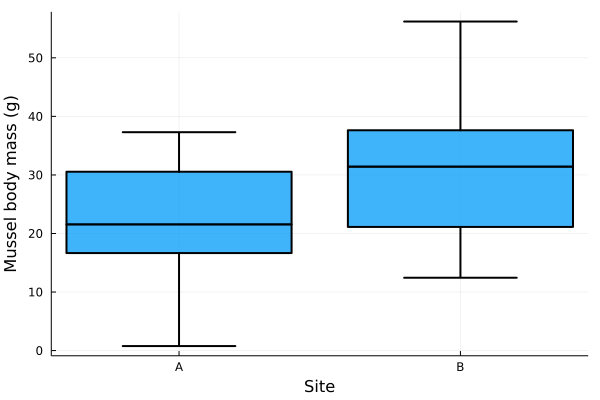
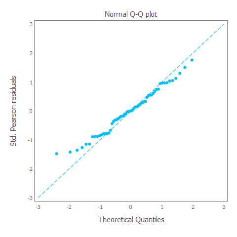
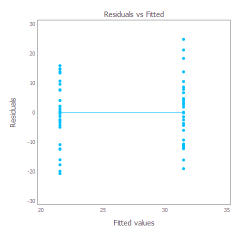
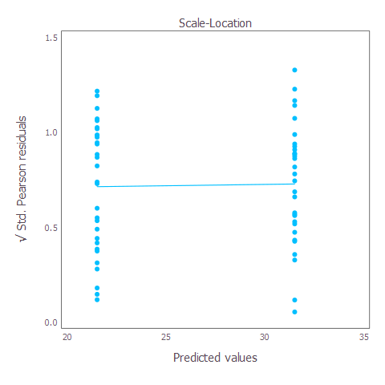

A Julia alternative for fitting a simple GLM
In the first post on this blog, we saw how to perform and interpret a simple General Linear Model (GLM) using a Gaussian (normal) distribution using R. Today, I am going to demonstrate how to perform the same analysis using Julia. Julia is a relatively new, really exciting programming language that is becoming more popular with biologists and ecologists due to its flexibility and speed. I find myself transitioning my data analyses from R to Julia quite frequently, and encourage you to explore Julia and whether it is a good fit for you and your work. Just remember, R is not the be-all-and-end-all of ecological statistics…
I find loading and installing packages in Julia more intuitive than R, although there are many similiarities.
Firstly, we need to install the packages we are going to use. This is equivalent to using install.packages("package_name") in R. We only do this the first time we run our Julia script. Just remove the preceding # from each line below to install the packages, if necessary.
# Load the package manager
using Pkg
# Install required packages (once-off)
# Pkg.add("GLM") # General linear models (GLM)
# Pkg.add("StatsModels") # Perform likelihood-ratio test
# Pkg.add("DataFrames") # Manipulating data structures (Julia's version of 'dplyr')
# Pkg.add("DataFramesMeta") # Manipulating data structures (Julia's version of 'dplyr')
# Pkg.add("Gadfly") # Produce nice figures (Julia's version of 'ggplot2')
# Pkg.add("StatsBase") # Basic statistical functions (e.g. mean, stddev)
# Pkg.add("Statistics") # More basic statistical functions
# Pkg.add("Distributions") # Fit basic statistical distributions
# Pkg.add("CSV") # Import and process .csv files
# Pkg.add("Plots") # Plot figures
# Pkg.add("StatsPlots") # Grouped box-plots recipe
# Pkg.add("Cairo") # Save .png file
# Pkg.add("Fontconfig") # Save .png fileSecondly, we need to load each of the packages required to perform our analyses. This is equivalent to using library("package_name") in R. We have to load the packages each time we start a new Julia session.
# Load required packages (every new session)
using GLM # General linear models (GLM)
using StatsModels # Perform likelihood-ratio test
using DataFrames # Manipulating data structures (Julia's version of 'dplyr')
using DataFramesMeta # Manipulating data structures (Julia's version of 'dplyr')
using Gadfly # Produce nice figures (Julia's version of 'ggplot2')
using StatsBase # Basic statistical functions (e.g. mean, stddev)
using Statistics # More basic statistical functions
using Distributions # Fit basic statistical distributions
using CSV # Import and process .csv files
using Plots # Plot figures
using StatsPlots # Grouped box-plots recipe
using Cairo # Save .png file
using Fontconfig # Save .png fileWe are going to use the same data for the the previous analysis performed in R. The study measured the body mass of 30 mussels (body_mass) from two field sites (site). Here, we have a single categorical predictor variable (site). The example .csv file is available from my GitHub repository, which we are going to download using Julia below.
# Provide the HTML address of the .csv file
html = "https://raw.githubusercontent.com/guysutton/stats_for_scared_ecologists/main/_posts/2021-08-11-gaussian-glm-in-julia/data_raw/data_mussel_body_mass.csv";
# Read in the HTML file and store is as a data frame
df = CSV.read(download(html), DataFrame)60×2 DataFrame
Row │ body_mass site
│ Float64 String
─────┼───────────────────
1 │ 18.7754 A
2 │ 25.5246 A
3 │ 23.4865 A
4 │ 23.5963 A
5 │ 28.9805 A
6 │ 0.774305 A
7 │ 22.6174 A
8 │ 29.1557 A
⋮ │ ⋮ ⋮
54 │ 31.3118 B
55 │ 25.3978 B
56 │ 36.0377 B
57 │ 39.2729 B
58 │ 33.2952 B
59 │ 19.5086 B
60 │ 19.944 B
45 rows omittedWe want to evaluate whether the mass of the mussels we collected differs between the two field sites.
H0: Mussel body mass is not statistically different between the two sites.
H1: Mussel body mass is statistically different between the two sites.
The first thing I usually do is check that the number of replicates per treatment is in line with the experimental design. In other words, we sampled 30 mussels per site, so let’s just check that each site has 30 mussel body mass measurements.
# Count the number of body mass measurements per site
combine(groupby(df, [:site]), nrow => :count)2×2 DataFrame
Row │ site count
│ String Int64
─────┼───────────────
1 │ A 30
2 │ B 30As expected, there are 30 rows of data per site. Good start!
The next step is to plot the data. You should be noting aspects such as:
# Plot distribution of mussel body masses between sites
@df df boxplot!(:site,
:body_mass,
fillalpha = 0.75,
linewidth = 2,
# Print legend or not
legend = false,
xlabel = "Site",
ylabel = "Mussel body mass (g)")
In this case, it looks like the median body mass (indicated by the bold black line) of mussels collected at site A is lower than than at site B). The variance (i.e. spread of body mass values along the y-axis) appears to be relatively similar between the two sites.
Fitting a GLM is relatively simple in Julia. All we need to do is tell it what is our response variable (the response variable is the measurement we are interested in). Here, the response variable is (body_mass). We then specify our predictor variables to the right-hand side of this weird ~ (tilde) symbol. Our predictor variables are things we have recorded that we believe could be affecting the response variable. Here, our predictor variable was site. We need to tell Julia where these data are stored (df), and that we want a Gaussian GLM (Normal()), with an identity link function (GLM.IdentityLink).
The last argument we specify is contrast, which allows us to mainly specify the comparisons between categorical variables that we want to make. In this example, we are simply comparing measurements from site_A vs site_B, so effects coding is not overly important. However, this will become more important when we build more complex models in later blog posts (e.g. including interaction terms). I won’t go into detail here, other than to point you towards a nice introduction to effects coding that you can read in the meanwhile.
# Fit Gaussian GLM
m1 = fit(
# We want a GLM
GeneralizedLinearModel,
# Specify the model formula
@formula(body_mass ~ site),
# Where is the data stored?
df,
# Which statistical distribution should we fit?
Normal(),
# Which link function should be applied?
GLM.IdentityLink(),
# Specify effects coding (more on this in later posts)
contrasts = Dict(:site => EffectsCoding()));Before we look at the results from our model, we must first check whether the GLM that we fit was an appropriate choice for our data. I won’t repeat the details from my analogous R post on the rationale and details behind model diagnostics. I haven’t managed to find an easy and intuitive package to perform model diagnostics in Julia (such as the DHARMa package in R). So below I have shown how to manually produce residuals diagnostics plots in Julia. I am working on writing up these methods as a new Julia package - watch this space!
The QQ plot tells us whether our data conforms to the distribution we specified in the in the GLM call above (remember: we said Normal()). If our GLM is a good fit to the data, the blue dots will fall approximately on the blue dashed 1:1 line.
# Extract fitted/predicted values from model object
pred = GLM.predict(m1);
# Extract vector of response values
resp = df[!, :body_mass];
# Calculate raw residuals
resids = resp .- pred;
# Calculate standard deviation of residuals
sdResids = Statistics.std(resids);
# Calculate length (n) of residuals vector
nResids = Base.length(resids);
# Calculate standard error of residuals
seResids = sdResids / sqrt(nResids);
# Calculate Standardised/studentized Pearson residuals
# - These are equivalent to plot(model, which = 2) in R
stzPearsResids = (resids / seResids) ./ 10;
# Define quantiles
qx = Distributions.quantile.(Distributions.Normal(),
range(0.5,
stop = (nResids .- 0.5),
length = (nResids))
./ (nResids .+ 1));
# Create plot
p = Gadfly.plot(
# Add points layer
Gadfly.layer(x = qx,
y = sort(stzPearsResids),
Gadfly.Geom.point),
# Add 1:1 line
Gadfly.layer(x = [-3,3],
y = [-3,3],
Gadfly.Geom.line,
Gadfly.style(line_style = [:dot])),
# Change plot aesthetics
Gadfly.Guide.title("Normal Q-Q plot"),
Gadfly.Guide.xlabel("Theoretical Quantiles"),
Gadfly.Guide.ylabel("Std. Pearson residuals"));
The blue dots (representing model residuals) fall approximately along the blue dashed 1:1 line, indicating that our residuals approximate the Gaussian or Normal distribution that we specified during the model fitting process. As such, it is reasonable to assume that a Gaussian/Normal distribution was an appropriate choice.
The residual vs fitted plot allows us to assess whether we satsify the assumption that our response variable (here: body_mass) can be modeled as a linear function of our predictor variable(s) (here: site), given we used a General LINEAR model. When our predictor variables are categorical, such as in the current model (remember site was our predictor variable with two levels, siteA and siteB), this plot will show dotplots with each level (e.g. each site) getting its own column. We want to see equally spread residuals around an approximately horizontal line, with no discernable pattern in the residuals.
# Extract fitted/predicted values from model object
pred = GLM.predict(m1);
# Extract vector containing response variable
response_y = df[!, :body_mass];
# Calculate deviance residuals
devResids = sign.(response_y .- pred) .* sqrt.(GLM.devresid.(Distributions.Normal(),
response_y,
pred));
# Create plot
p = Gadfly.plot(
# Add points layer
x = pred,
y = devResids,
Gadfly.Geom.point,
Gadfly.layer(Gadfly.Geom.smooth(method = :loess,
smoothing = 0.9)),
# Change plot aesthetics
Gadfly.Guide.xlabel("Fitted values", orientation=:horizontal),
Gadfly.Guide.ylabel("Residuals"),
Gadfly.Guide.title("Residuals vs Fitted"));
Here, we see no significant pattern in the residuals. The residuals are approximately evenly distributed in the two different groups and are centered around a horizontal line of y = 0. This plots indicates that it is probably acceptable to assume a linear relationship between body_mass ~ site.
This plots allows us to evaluate whether our data demonstrates heteroscedasticity. This is just a fancy way to say that the variance in the data is systematically dependent on some variable in the model. If you remember back to undergraduate statistics courses, linear models typically assume that the data displays equal variances across groups or numeric variables. When our predictor variables are categorical, this plot will show dotplots with each level (e.g. each site) getting its own dotplot.
Much like for the Residual vs Fitted Plot above, we want to see approximately equally distributed residuals across the two dotplots, and a horizontal y-line.
# Calculate square root of Std. Pearson residuals
stzPearsResids = (resids / seResids) ./ 10;
sqrPearResids = sqrt.(complex(stzPearsResids));
sqrPearResids = abs.(sqrPearResids);
# Create plot
p = Gadfly.plot(x = pred,
y = sqrPearResids,
Gadfly.layer(Gadfly.Geom.point),
Gadfly.layer(Gadfly.Geom.smooth(method = :loess,
smoothing = 0.9)),
# Change plot aesthetics
Gadfly.Guide.title("Scale-Location"),
Gadfly.Guide.xlabel("Predicted values",
orientation=:horizontal),
Gadfly.Guide.ylabel("√ Std. Pearson residuals"));
The residuals are approximately evenly distributed in the two different groups, and the slope of the line between the two groups is approximately 0. Taken together, this plots indicates that the assumption of equality of variances has been met.
Now to the bit of the analysis that most ecologists are most interested in (at least to appease their reviewers: assessing statistical significance and calculating p-values). Here, we perform statistical inference, which basically means we are going to evaluate “which [model] coefficients are non-zero beyond a reasonable doubt, implying meaningful associations between covariates and the response?†(Tredennick et al. 2021).
To do this, we will use a Likelihood Ratio Test (LRT). The LRT allows us to compare a model of interest with a null model that lacks some feature of the model of interest (Tredennick et al. 2021). For example, below we will compare our model of interest (containing the site predictor variable) with a null model which lacks the site predictor. This way we can ask whether adding information about site improved the likelihood of the data in comparison to the null model. Please see (Tredennick et al. 2021) for an excellent introduction to using the LRT for inference.
Below, we define our null model as model containing only a random-intercept only, which is probably the most common null model for basic statistical inference in ecology.
# Define null model to assess effect of 'site' on mussel body mass
# - Fit a random intercept only (indicated by y ~ 1)
mnull = fit(
GeneralizedLinearModel,
@formula(body_mass ~ 1),
df,
Normal(),
GLM.IdentityLink());And finally, we can perform a LRT to test that hypothesis that mussel body mass differed between the two field sites sampled.
# Perform LRT
StatsModels.lrtest(mnull, m1)Likelihood-ratio test: 2 models fitted on 60 observations
────────────────────────────────────────────────
DOF ΔDOF Deviance ΔDeviance p(>Chisq)
────────────────────────────────────────────────
[1] 2 8481.0951
[2] 3 1 6983.1276 -1497.9675 <1e-99
────────────────────────────────────────────────So, the LRT tells us that including site as a predictor significantly improved the fit of our model to the data relative to the null model (\(\chi\)2 = 1498, d.f. = 1, P < 0.001). Note how the results are exactly the same as we got using R previously. As they should be, but it is good to check! The LRT supports our alternative hypothesis that mussel body masses were different between the two field sites sampled.
We have now covered how to run and interpret a Gaussian GLM in both R and Julia. Please let me know if there are any improvements or what topics you would like me to cover going forward.